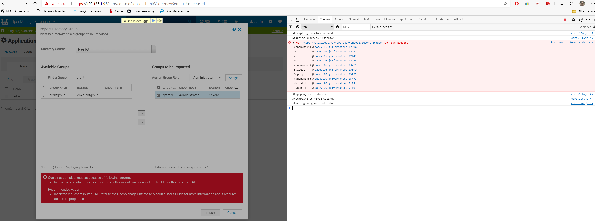
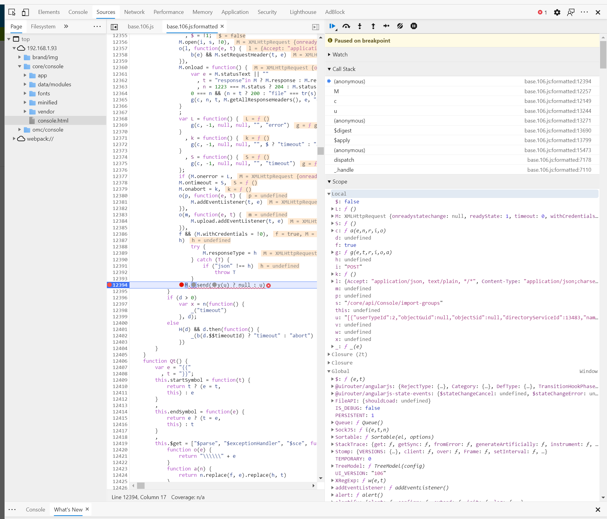

Setting Up FreeIPA with OpenManage
My Environment
RHEL Version
NAME="Red Hat Enterprise Linux"
VERSION="8.2 (Ootpa)"
ID="rhel"
ID_LIKE="fedora"
VERSION_ID="8.2"
PLATFORM_ID="platform:el8"
PRETTY_NAME="Red Hat Enterprise Linux 8.2 (Ootpa)"
ANSI_COLOR="0;31"
CPE_NAME="cpe:/o:redhat:enterprise_linux:8.2:GA"
HOME_URL="https://www.redhat.com/"
BUG_REPORT_URL="https://bugzilla.redhat.com/"
REDHAT_BUGZILLA_PRODUCT="Red Hat Enterprise Linux 8"
REDHAT_BUGZILLA_PRODUCT_VERSION=8.2
REDHAT_SUPPORT_PRODUCT="Red Hat Enterprise Linux"
REDHAT_SUPPORT_PRODUCT_VERSION="8.2"
Red Hat Enterprise Linux release 8.2 (Ootpa)
Red Hat Enterprise Linux release 8.2 (Ootpa)
FreeIPA Version
[root@centos ~]# ipa --version
VERSION: 4.8.4, API_VERSION: 2.235
OpenManage Version
Version 3.4.1 (Build 24)
Helpful Resources
Install Instructions
- Install RHEL
- Change hostname
1.
hostname freeipa.grant.lan && hostnamectl set-hostname freeipa.grant.lan2.Change in /etc/hostname 3.Configure DNS to return for this hostname. Double check withdig +short freeipa.grant.lan A && dig +short -x 192.168.1.95 - Follow RHEL's instructions 1.I used Chapter 5 for primary installation
-
- Run
kinit admin- this allows you to use the command line tools otherwise they'll complain about kerberos.
- Run
- Log into FreeIPA server at
https://<your_hostname>. In my case, Windows popped up a username and password prompt. That prompt didn't work - I had to exit it and then log into the webGUI. - Go to Users and then directory services in OpenManage. I used the following:
- Note: You can get the Bind DN by running
ldapsearchfrom the command line.
- Note: You can get the Bind DN by running
- Create a new user and new group in the UI and assign the new user to the new group.
- Install OpenManage
- Go to Application Settings -> Directory Services

- Substitute with your values and then click test. I wasn't able to get this to work with the generic admin user. In the test screen I used that new user to connect to directory services
Helpful Commands
To start the IPA service use ipactl start|stop|restart. You can check the status with ipactl status.
Bug
- I used the settings defined here:
- When I went to import the users from a group I received the following: 
The code in question:

Below was the value of u at runtime:
[
{
"userTypeId":2,
"objectGuid":null,
"objectSid":null,
"directoryServiceId":13483,
"name":"grantgroup",
"password":"",
"userName":"grantgroup",
"roleId":"10",
"locked":false,
"isBuiltin":false,
"enabled":true
}
]
Error in logs
[ERROR] 2020-10-22 07:33:08.392 [ajp-bio-8009-exec-2] BaseController - com.dell.enterprise.exception.ui.ConsoleException: error.general_known_error_occurred
com.dell.enterprise.exception.ui.ConsoleException: error.general_known_error_occurred
at com.dell.enterprise.controller.console.ADController.importGroups(ADController.java:400) ~[UI.ADPlugin-0.0.1-SNAPSHOT.jar:?]
at sun.reflect.GeneratedMethodAccessor824.invoke(Unknown Source) ~[?:?]
at sun.reflect.DelegatingMethodAccessorImpl.invoke(DelegatingMethodAccessorImpl.java:43) ~[?:1.8.0_262]
at java.lang.reflect.Method.invoke(Method.java:498) ~[?:1.8.0_262]
at org.springframework.web.method.support.InvocableHandlerMethod.doInvoke(InvocableHandlerMethod.java:205) ~[spring-web-4.3.28.RELEASE.jar:4.3.28.RELEASE]
at org.springframework.web.method.support.InvocableHandlerMethod.invokeForRequest(InvocableHandlerMethod.java:133) ~[spring-web-4.3.28.RELEASE.jar:4.3.28.RELEASE]
at org.springframework.web.servlet.mvc.method.annotation.ServletInvocableHandlerMethod.invokeAndHandle(ServletInvocableHandlerMethod.java:97) ~[spring-webmvc-4.3.28.RELEASE.jar:4.3.28.RELEASE]
at org.springframework.web.servlet.mvc.method.annotation.RequestMappingHandlerAdapter.invokeHandlerMethod(RequestMappingHandlerAdapter.java:854) ~[spring-webmvc-4.3.28.RELEASE.jar:4.3.28.RELEASE]
at org.springframework.web.servlet.mvc.method.annotation.RequestMappingHandlerAdapter.handleInternal(RequestMappingHandlerAdapter.java:765) ~[spring-webmvc-4.3.28.RELEASE.jar:4.3.28.RELEASE]
at org.springframework.web.servlet.mvc.method.AbstractHandlerMethodAdapter.handle(AbstractHandlerMethodAdapter.java:85) ~[spring-webmvc-4.3.28.RELEASE.jar:4.3.28.RELEASE]
at org.springframework.web.servlet.DispatcherServlet.doDispatch(DispatcherServlet.java:967) [spring-webmvc-4.3.28.RELEASE.jar:4.3.28.RELEASE]
at org.springframework.web.servlet.DispatcherServlet.doService(DispatcherServlet.java:901) [spring-webmvc-4.3.28.RELEASE.jar:4.3.28.RELEASE]
at org.springframework.web.servlet.FrameworkServlet.processRequest(FrameworkServlet.java:970) [spring-webmvc-4.3.28.RELEASE.jar:4.3.28.RELEASE]
at org.springframework.web.servlet.FrameworkServlet.doPost(FrameworkServlet.java:872) [spring-webmvc-4.3.28.RELEASE.jar:4.3.28.RELEASE]
at javax.servlet.http.HttpServlet.service(HttpServlet.java:650) [tomcat-servlet-3.0-api.jar:?]
at org.springframework.web.servlet.FrameworkServlet.service(FrameworkServlet.java:846) [spring-webmvc-4.3.28.RELEASE.jar:4.3.28.RELEASE]
at javax.servlet.http.HttpServlet.service(HttpServlet.java:731) [tomcat-servlet-3.0-api.jar:?]
at org.apache.catalina.core.ApplicationFilterChain.internalDoFilter(ApplicationFilterChain.java:303) [catalina.jar:7.0.76]
at org.apache.catalina.core.ApplicationFilterChain.doFilter(ApplicationFilterChain.java:208) [catalina.jar:7.0.76]
at org.apache.tomcat.websocket.server.WsFilter.doFilter(WsFilter.java:52) [tomcat7-websocket.jar:7.0.76]
at org.apache.catalina.core.ApplicationFilterChain.internalDoFilter(ApplicationFilterChain.java:241) [catalina.jar:7.0.76]
at org.apache.catalina.core.ApplicationFilterChain.doFilter(ApplicationFilterChain.java:208) [catalina.jar:7.0.76]
at com.dell.enterprise.filter.ui.CacheControlFilter.doFilterInternal(CacheControlFilter.java:23) [classes/:?]
at org.springframework.web.filter.OncePerRequestFilter.doFilter(OncePerRequestFilter.java:107) [spring-web-4.3.28.RELEASE.jar:4.3.28.RELEASE]
at org.springframework.web.filter.DelegatingFilterProxy.invokeDelegate(DelegatingFilterProxy.java:347) [spring-web-4.3.28.RELEASE.jar:4.3.28.RELEASE]
at org.springframework.web.filter.DelegatingFilterProxy.doFilter(DelegatingFilterProxy.java:263) [spring-web-4.3.28.RELEASE.jar:4.3.28.RELEASE]
at org.apache.catalina.core.ApplicationFilterChain.internalDoFilter(ApplicationFilterChain.java:241) [catalina.jar:7.0.76]
at org.apache.catalina.core.ApplicationFilterChain.doFilter(ApplicationFilterChain.java:208) [catalina.jar:7.0.76]
at org.apache.catalina.filters.SetCharacterEncodingFilter.doFilter(SetCharacterEncodingFilter.java:108) [catalina.jar:7.0.76]
at org.apache.catalina.core.ApplicationFilterChain.internalDoFilter(ApplicationFilterChain.java:241) [catalina.jar:7.0.76]
at org.apache.catalina.core.ApplicationFilterChain.doFilter(ApplicationFilterChain.java:208) [catalina.jar:7.0.76]
at org.apache.shiro.web.servlet.ProxiedFilterChain.doFilter(ProxiedFilterChain.java:61) [shiro-web-1.6.0.jar:1.6.0]
at org.apache.shiro.web.servlet.AdviceFilter.executeChain(AdviceFilter.java:108) [shiro-web-1.6.0.jar:1.6.0]
at org.apache.shiro.web.servlet.AdviceFilter.doFilterInternal(AdviceFilter.java:137) [shiro-web-1.6.0.jar:1.6.0]
at org.apache.shiro.web.servlet.OncePerRequestFilter.doFilter(OncePerRequestFilter.java:125) [shiro-web-1.6.0.jar:1.6.0]
at org.apache.shiro.web.servlet.ProxiedFilterChain.doFilter(ProxiedFilterChain.java:66) [shiro-web-1.6.0.jar:1.6.0]
at org.apache.shiro.web.servlet.AdviceFilter.executeChain(AdviceFilter.java:108) [shiro-web-1.6.0.jar:1.6.0]
at org.apache.shiro.web.servlet.AdviceFilter.doFilterInternal(AdviceFilter.java:137) [shiro-web-1.6.0.jar:1.6.0]
at org.apache.shiro.web.servlet.OncePerRequestFilter.doFilter(OncePerRequestFilter.java:125) [shiro-web-1.6.0.jar:1.6.0]
at org.apache.shiro.web.servlet.ProxiedFilterChain.doFilter(ProxiedFilterChain.java:66) [shiro-web-1.6.0.jar:1.6.0]
at org.apache.shiro.web.servlet.AbstractShiroFilter.executeChain(AbstractShiroFilter.java:450) [shiro-web-1.6.0.jar:1.6.0]
at org.apache.shiro.web.servlet.AbstractShiroFilter$1.call(AbstractShiroFilter.java:365) [shiro-web-1.6.0.jar:1.6.0]
at org.apache.shiro.subject.support.SubjectCallable.doCall(SubjectCallable.java:90) [shiro-core-1.6.0.jar:1.6.0]
at org.apache.shiro.subject.support.SubjectCallable.call(SubjectCallable.java:83) [shiro-core-1.6.0.jar:1.6.0]
at org.apache.shiro.subject.support.DelegatingSubject.execute(DelegatingSubject.java:387) [shiro-core-1.6.0.jar:1.6.0]
at org.apache.shiro.web.servlet.AbstractShiroFilter.doFilterInternal(AbstractShiroFilter.java:362) [shiro-web-1.6.0.jar:1.6.0]
at org.apache.shiro.web.servlet.OncePerRequestFilter.doFilter(OncePerRequestFilter.java:125) [shiro-web-1.6.0.jar:1.6.0]
at org.springframework.web.filter.DelegatingFilterProxy.invokeDelegate(DelegatingFilterProxy.java:347) [spring-web-4.3.28.RELEASE.jar:4.3.28.RELEASE]
at org.springframework.web.filter.DelegatingFilterProxy.doFilter(DelegatingFilterProxy.java:263) [spring-web-4.3.28.RELEASE.jar:4.3.28.RELEASE]
at org.apache.catalina.core.ApplicationFilterChain.internalDoFilter(ApplicationFilterChain.java:241) [catalina.jar:7.0.76]
at org.apache.catalina.core.ApplicationFilterChain.doFilter(ApplicationFilterChain.java:208) [catalina.jar:7.0.76]
at com.dell.enterprise.core.integration.lib.common.filter.RequestFilter.doFilter(RequestFilter.java:103) [common-0.0.1-SNAPSHOT.jar:?]
at org.apache.catalina.core.ApplicationFilterChain.internalDoFilter(ApplicationFilterChain.java:241) [catalina.jar:7.0.76]
at org.apache.catalina.core.ApplicationFilterChain.doFilter(ApplicationFilterChain.java:208) [catalina.jar:7.0.76]
at org.apache.catalina.core.StandardWrapperValve.invoke(StandardWrapperValve.java:218) [catalina.jar:7.0.76]
at org.apache.catalina.core.StandardContextValve.invoke(StandardContextValve.java:110) [catalina.jar:7.0.76]
at org.apache.catalina.authenticator.AuthenticatorBase.invoke(AuthenticatorBase.java:498) [catalina.jar:7.0.76]
at org.apache.catalina.core.StandardHostValve.invoke(StandardHostValve.java:169) [catalina.jar:7.0.76]
at org.apache.catalina.valves.ErrorReportValve.invoke(ErrorReportValve.java:103) [catalina.jar:7.0.76]
at org.apache.catalina.valves.AccessLogValve.invoke(AccessLogValve.java:962) [catalina.jar:7.0.76]
at org.apache.catalina.core.StandardEngineValve.invoke(StandardEngineValve.java:116) [catalina.jar:7.0.76]
at org.apache.catalina.connector.CoyoteAdapter.service(CoyoteAdapter.java:445) [catalina.jar:7.0.76]
at org.apache.coyote.ajp.AjpProcessor.process(AjpProcessor.java:190) [tomcat-coyote.jar:7.0.76]
at org.apache.coyote.AbstractProtocol$AbstractConnectionHandler.process(AbstractProtocol.java:637) [tomcat-coyote.jar:7.0.76]
at org.apache.tomcat.util.net.JIoEndpoint$SocketProcessor.run(JIoEndpoint.java:316) [tomcat-coyote.jar:7.0.76]
at java.util.concurrent.ThreadPoolExecutor.runWorker(ThreadPoolExecutor.java:1149) [?:1.8.0_262]
at java.util.concurrent.ThreadPoolExecutor$Worker.run(ThreadPoolExecutor.java:624) [?:1.8.0_262]
at org.apache.tomcat.util.threads.TaskThread$WrappingRunnable.run(TaskThread.java:61) [tomcat-coyote.jar:7.0.76]
at java.lang.Thread.run(Thread.java:748) [?:1.8.0_262]
Further Explanation
The URI endpoint is: https://192.168.1.93/core/api/Console/import-groups
This is the JSON returned from the call.
{severity: "IGNORE", message: "error.general_known_error_occurred",…}
debug: false
details: {error: {code: "Base.1.0.GeneralError",…}}
error: {code: "Base.1.0.GeneralError",…}
@Message.ExtendedInfo: [{MessageId: "CGEN1004", RelatedProperties: [],…}]
code: "Base.1.0.GeneralError"
message: "A general error has occurred. See ExtendedInfo for more information."
message: "error.general_known_error_occurred"
severity: "IGNORE"
timestamp: "2020-10-21T14:43:44.385-0500"
The errors occurs at: M.send(y(u) ? null : u)
See here for a description of Javascript's ternary operator.
In this case it is saying if y(u) is true then the value is set to null, otherwise it is set to u. The y function is:
function y(e) {
return "undefined" == typeof e
}
It is just a basic check to see if u is defined or not. M is an instance of XMLHttpRequest. We can see M being called with open M.open(i, s, !0) where i is "POST" and s is "/core/api/Console/import-groups".
The problem occurs because objectGuid and objectSid are set to null.
Resolution
See duplicate_bug.py for a replication of the problem. Replace the payload:
{
"userTypeId":2,
"objectGuid":null,
"objectSid":null,
"directoryServiceId":13483,
"name":"grantgroup",
"password":"",
"userName":"grantgroup",
"roleId":"10",
"locked":false,
"isBuiltin":false,
"enabled":true
}
with the data from your instance. I grabbed this out of the javascript debugger. To fix the problem, you have to lookup the uid/gid (which correspond to objectSid and objectGuid respectively) on your LDAP server and replace the null values. I used ldapsearch to find mine:
# grant, users, compat, grant.lan
dn: uid=grant,cn=users,cn=compat,dc=grant,dc=lan
objectClass: posixAccount
objectClass: ipaOverrideTarget
objectClass: top
gecos: Grant Curell
cn: Grant Curell
uidNumber: 1314600001
gidNumber: 1314600001
loginShell: /bin/sh
homeDirectory: /home/grant
ipaAnchorUUID:: OklQQTpncmFudC5sYW46OWIzOTYwNDQtMTNhZS0xMWViLTllNzctMDA1MDU2Ym
U4NGIw
uid: grant
You can see the uidNumber and gidNumber fields. Change the payload out in duplicate_bug.py and it will correctly import the group.
test_payload = [
{
"userTypeId": 2,
"objectGuid": 1314600001,
"objectSid": 1314600001,
"directoryServiceId": 13483,
"name": "grantgroup",
"password": "",
"userName": "grant",
"roleId": "10",
"locked": False,
"isBuiltin": False,
"enabled": True
}
]